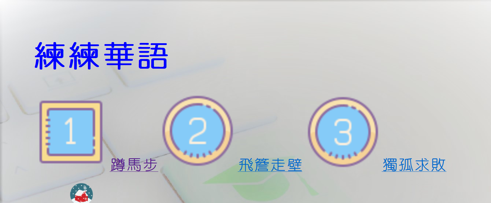

109-1 網頁程式設計 資訊通識課程
（投影片連結改至 eCourse2 課程網頁下載）
- 首週課程簡介.ppt
- 網頁設計相關程式語言介紹.ppt
- 第3週課程投影片.ppt
- 第4週網頁文件結構說明 實作第一個網頁程投影片.ppt
- 第5週課程投影片.pttx
- 第6週課程投影片.pttx
- 表格（與排版）.pptx
- 影音多媒體.pptx
- midtermNotice.pptx
- 表單與後端處理
- 後端資料庫寫入及讀取
- CSS
- Box Model
- 行動版網頁 行動版網頁範例資料夾
- Bootstrap (I); Bootstrap (II)
- 前端之後
相關學習資源：


Publications
ORCiD: 0000-0003-2016-3520
Journal articles
- 劉德馨*, 施孟賢（2022年3月）。建置構式成語語料庫輔助華語教學－兼論同型構式和近義構式。華語文教學研究，19(1), 95-121。（THCI Core，語言）。科技部：109-2410-H-002-198。
- Shih, Meng-Hsien, Ren-feng Duann*, and Siaw-Fong Chung. 2021. The Analysis and Annotation of Propaganda Techniques in Chinese News Texts. International Journal of Computational Linguistics and Chinese Language Processing 26 (1): 79–104. [MOST 109-2811-H-004-503、109-2410-H-004-163- 與110-2811-H-007-502]. 本人為第一作者。(THCI)
- Chung, S.-F., Shih, M.-H., Liu, H.-W., Lee, C.-L., & Chiang, Y.-H. (2021, August). The Use of Hei diao ('To Turn Black') and its Related [V diao] Forms in Social Media: A Corpus-based Study. International Review of Pragmatics, 13(2), 125-152. [MOST 109-2811-H-004-503; 110-2811-H-007-502]. (ESCI, Scopus)
- Chung, S.-F., & Shih, M.-H. (2019). An Annotated News Corpus of Malaysian Malay. NUSA: Linguistic studies of languages in and around Indonesia, 67, 7-34.
Book chapters
- Shih, Meng-hsien*, Chung, S.-F., Sheng, Y.-H., & Liao, H.-C. (2021). A Study of KIND Metaphor and Simile Annotation Using Dependency Parsing and ConceptNet. In M. Liu et al. (Eds.): CLSW 2020, LNAI 12278, pp. 525-535. Springer. [MOST 108-2410-H-004-095-; 109-2811-H-004 -503-]. 本人為第一作者、通訊作者。(EI)
Conference papers
- 鄭縈*、施孟賢（2022年8月）。使動/起動轉換與DDL（語料驅動學習）模式。第九屆兩岸華語文教師研討會暨第十二屆世界華語文研究生研討會，西北師範大學。科技部計畫：109-2420-H-007-007-MY2。
- 劉德馨*、施孟賢（2021年12月）。四字格構式成語語料庫之建置。第20屆台灣華語文教學學會年會暨國際學術研討會，國立臺灣大學。科技部計畫：109-2410-H-002-198。
- 施孟賢（2021年10月）。具詞類標記之客華平行語料庫。發表於第七屆青年學者台灣語言學術研討會，國立臺灣師範大學。科技部：110-2811-H-007-502。本人為第一作者、通訊作者。
- Meng-Hsien Shih, Te-hsin Liu (2021, August). Constructions in Chinese four-character idioms in cross-strait varieties of modern Chinese. To be presented at the 11th International Conference on Construction Grammar, Antwerp. [MOST 109-2410-H-002-198; 110-2811-H-007-502]
- Meng-Hsien Shih, Siaw-Fong Chung (2021, July). A Malay Daily News Corpus with Morphological and POS Tagging by the MorphInd Tagger. The Corpus Linguistics International Conference 2021, Ireland.
- Meng-Hsien Shih, Siaw-Fong Chung (2021, July). Chinese Semantic Role Sketch based on Sinica Treebank. The Corpus Linguistics International Conference 2021, University of Limerick, Ireland.
Talks:
- 施孟賢（2021年11月)。華客閩翻譯語料處理。輔仁大學跨文化研究所。
- Chung, S.-F. & Shih, M.-H. (2020). A Corpus-based Study on KIND Metaphor. Taipei: Academia Sinica.
- Chung, S.-F. & Shih, M.-H. (2019). Corpus Workshop: Movie titles and vocabulary learning. Taichung: National Chinyi University of Technology.
Projects:
- 2020.01 - 2020.07 Postdoctoral Research: A Corpus-based Cross-linguistic Analysis of KIND Metaphors. MOST 109-2811-H-004-503.
- 2021.01 - 2021.12 Postdoctoral Research: 臺灣本土語言搭配詞資源之建構 ── 以平行語料為本. MOST 110-2811-H-007-502.
- 2022.08 - 2022.12 Postdoctoral Research: 臺灣語料庫之建構. 教育部 110 年「大專校院 人文與社會科學領域標竿計畫」（2 年期計畫）.
Resources
- 構式成語資料庫 http://idiomconstructions.github.io（建置構式成語語料庫輔助華語教學，華語文教學研究，19(1), 95-121）
- 臺灣語料庫 http://Taiwanese-Corpora.GitHub.io/index.html（教育部 110 年「大專校院 人文與社會科學領域標竿計畫」2 年期計畫）
- 練練華語 http://mhshih.github.io/tcsl（國家教育研究院「2019華語文語料庫數位教學應用競賽」系統發展組佳作）